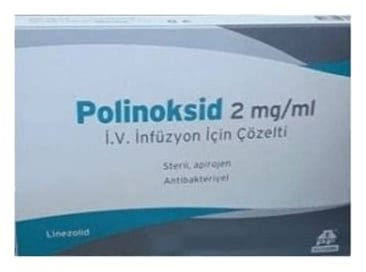

Polinoksid 2 mg/ml I.V. İnfüzyon İçin ÇÖZELTI,300 ml Setsiz

Ne için kullanılır
KT · Bölüm 1• POLİNOKSİD oksazolidinonlar grubundan bir antibiyotik olarak belirli bakteri tiplerinin çoğalmasını durdurur. Zatürre ve deri üzerindeki veya deri altındaki bazı enfeksiyonların tedavisi için kullanılır. • POLİNOKSİD, bir plastik tüp yardımıyla damara yavaşça verilen bir sıvıdır. Bu uygulama intravenöz enfüzyon veya “damardan damla damla” olarak adlandırılır. POLİNOKSİD’in etkin maddesi linezolid antibakteriyel bir ilaç grubuna dahildir. • Tek kullanımlık, kullanıma hazır enfüzyon torbaları 300 mL (600 mg linezolid etkin maddesi) çözelti içerir. 1 enfüzyon torbası içeren torbalar şeklinde kullanıma sunulmaktadır. • POLİNOKSİD oksazolidinonlar grubundan bir antibiyotik olarak belirli bakteri tiplerinin çoğalmasını durdurur. Zatürre ve deri üzerindeki veya deri altındaki bazı enfeksiyonların tedavisi için kullanılır.